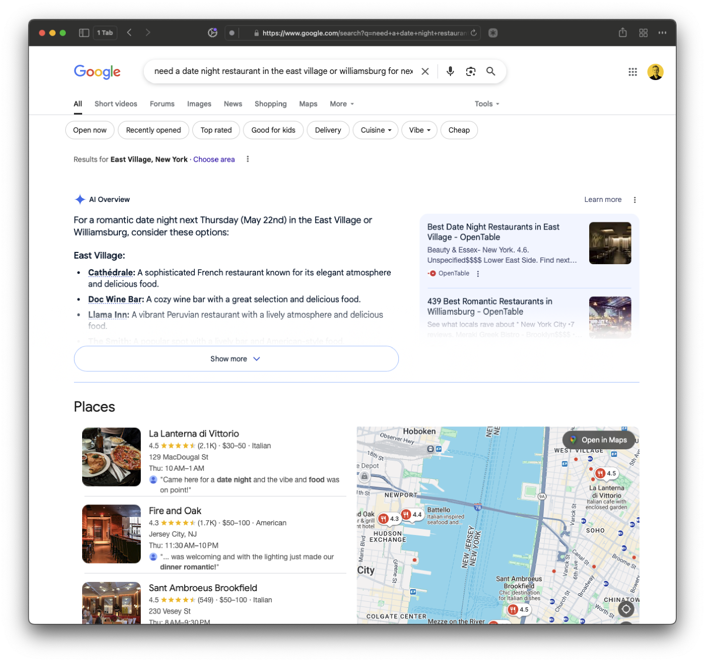
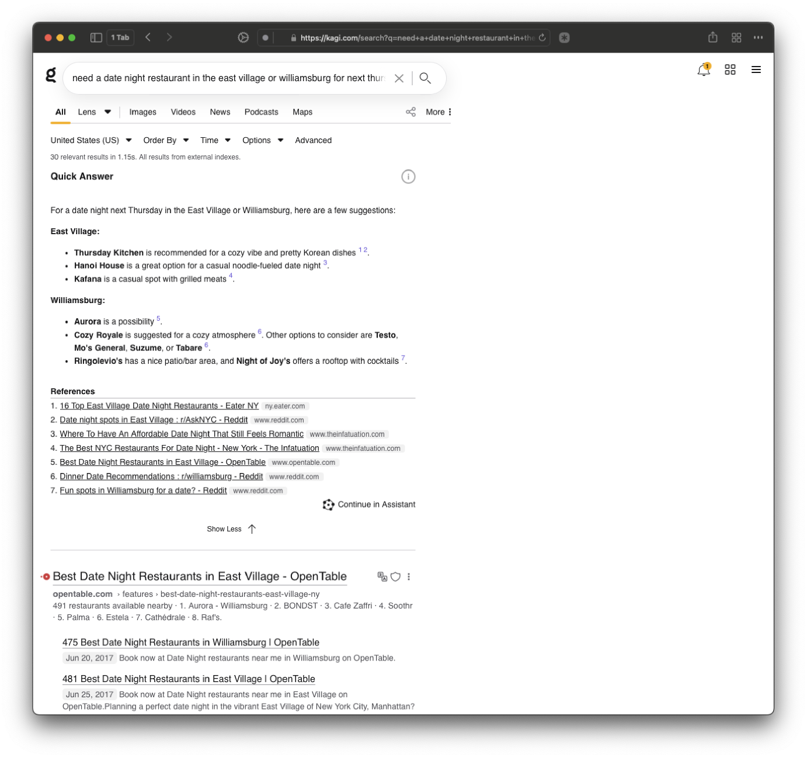

Search Was Starting To Sound More Human
By May 2025, Google and other search surfaces were already training users to expect direct, conversational answers. Resy had a different raw material to work with than generic search engines: editorial taste, neighborhood nuance, and real booking inventory.
That created an opportunity to rethink discovery as guided intent rather than just filter management.
Filters Broke Down The Moment Intent Got Messy
Traditional restaurant discovery leans on list views and granular filters like cuisine, time, and price. That model is powerful, but it breaks down when intent is fuzzy: “tasting menu near me,” “date night but not stuffy,” or “birthday dinner under $100.”
A generic AI layer would not have been enough. The experience needed to feel opinionated, trustworthy, and unmistakably Resy while still keeping diners close to live availability and the downstream booking flow.
The Answer Needed Taste, Context, And Real Tables
- Hybrid search model: put an AI answer at the top of results, then keep live venue cards directly underneath so diners could move from guidance into action without switching mental models.
- Editorial grounding: shape answers around Resy Guides, Collections, and curated language instead of generic summaries, so the system could explain not just what matched, but why.
- Context + follow-ups: use the answer block to suggest neighborhoods, price ranges, availability context, and a next prompt that refined the search instead of forcing users back into filters.
- Transparent trust cues: frame the concept as an early beta and point back to linked sources, keeping the AI layer assistive rather than overconfident.



The Concept Never Shipped, But The Thesis Held
Somm AI never shipped, but the proof of concept clarified a strong product thesis: Resy’s advantage in AI search was never going to be generic language generation on its own. The real opportunity was combining conversational guidance with editorial curation and bookable inventory.
The work also created a sharper competitive frame. OpenTable still centered filters, Google’s AI layers felt broad and noisy, and Yelp remained reviews-first. Resy could have occupied a warmer middle ground: not just a booking tool, but a dining concierge with real tables behind the answer.
Just as important, the concept proved the value of unshipped exploration. Somm AI helped define what an editorially grounded, availability-aware AI surface could look like inside Resy before that direction became table stakes across consumer products.